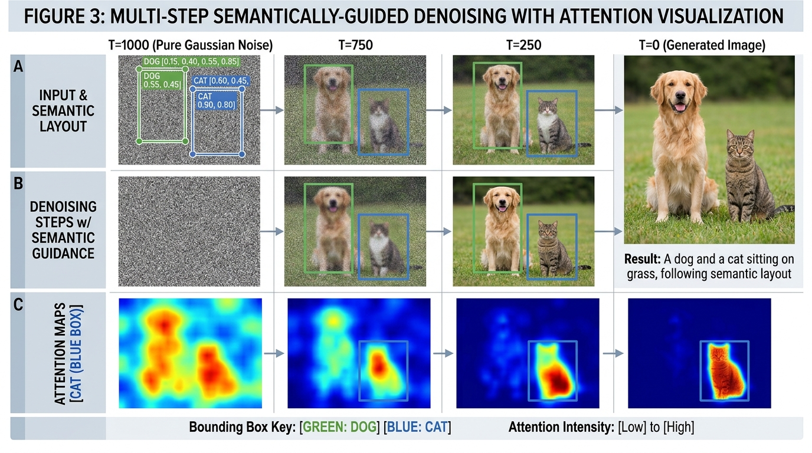
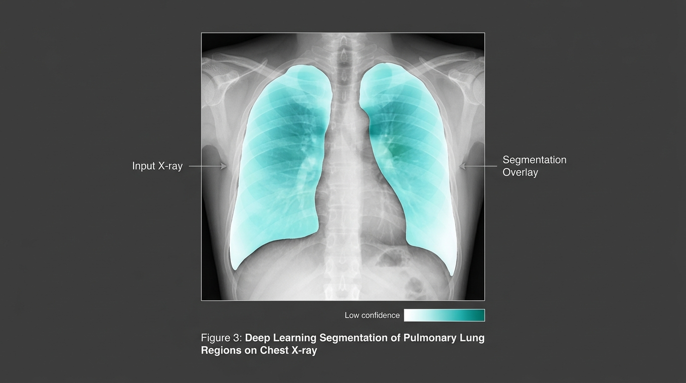

I am an AI Master's student at Charles University in Prague, Czech Republic, working in the intersection of Machine Learning and Deep Learning. I am also the Founder and Lead AI Researcher at the Ethiopian Researchers Institute, leading collaborative research initiatives and mentoring students. Prior to Charles University, I earned my Bachelor's in Software Engineering from Jimma University, Ethiopia. I have worked as a Software Engineer at INSA (Information Network Security Administration of Ethiopia) focusing on software and system architecture, and as a software engineer intern at Abronal Technologies.


Ethiopian Researchers Institute Platform
ethioresearch.org (02/2025 – Present)
Founded and developed the institutional digital portal and collaborative research network connecting Ethiopian scholars, data scientists, and engineers worldwide.
Document Management System
Abronal Technologies PLC (06/2023 – 08/2023)
Collected system requirements, designed full system and relational database architectures, and implemented a document management and archiving software system for the regional trade office.